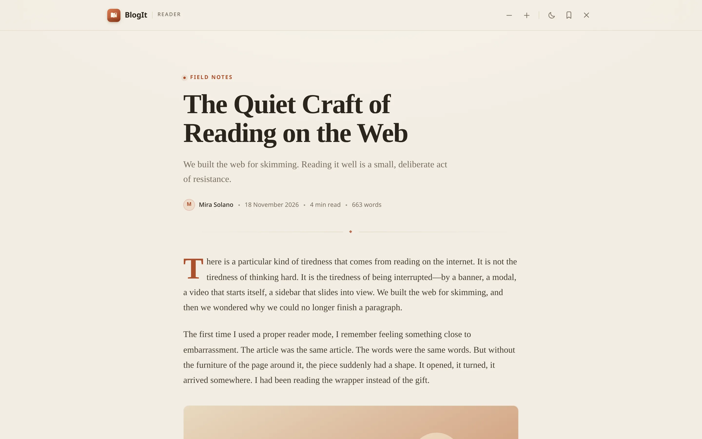
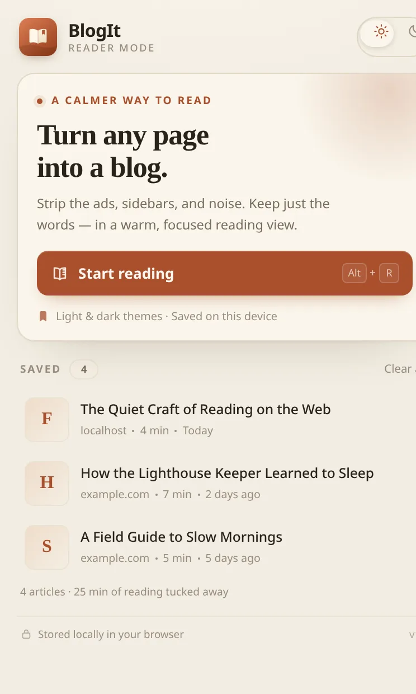
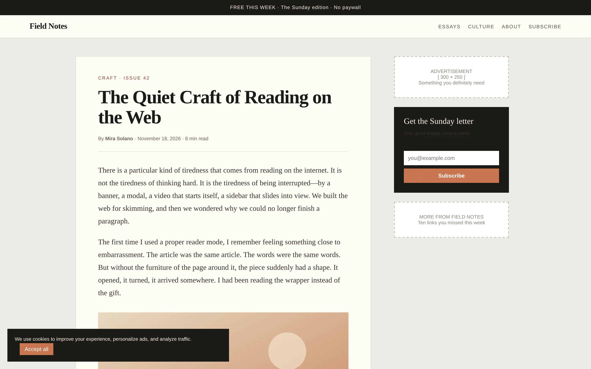

Reader mode anywhere
One click turns a cluttered article, essay, or blog post into a clean reading view. Readability finds the story; BlogIt drops the rest.
A calmer way to read
BlogIt strips the ads, sidebars, pop-ups, and clutter from the article you're reading — then sets it in a warm, quiet reading view you can keep.
Free · No account · Everything stays on your device


The difference
The average article page asks for your attention a dozen times before the first paragraph. BlogIt asks once.

Features
No dashboards, no feed, no recommendations. Just a better surface for the thing you already came to read.
One click turns a cluttered article, essay, or blog post into a clean reading view. Readability finds the story; BlogIt drops the rest.
Two themes tuned for long sessions. No stark white, no pitch black — just a page that is easy on the eyes at noon and at midnight.
Save what you want to finish later. Articles live in your browser's extension storage — not on a server, not in an account, not in the cloud.
An editorial serif, a ~70-character measure, a gentle drop cap, and type that scales with one tap. Small type should never be the price of admission.
Alt + R toggles reader mode on any tab. Esc closes it. Ctrl/⌘ + S saves the piece. No mouse required.
No account, no analytics, no sync. BlogIt only reads the page you are on, and it keeps every saved article on your own machine.
Two themes
Warm paper for daylight, warm charcoal for late nights. Both use the same terracotta accent and the same calm typography — only the light changes.
How it works
A story, an essay, a long blog post — any normal page with words worth reading.
The overlay opens in place. The page underneath stays exactly where it was.
Nudge the type, switch the theme, and save the piece to your local library.
Privacy
BlogIt has no backend, no account system, and no telemetry. It works entirely inside your browser. Read the full policy.
chrome.storage.local
They never leave your device, and removing the extension removes them.
Nothing to log in to, nothing to opt out of, nothing watching what you read.
BlogIt rewrites image paths but doesn't proxy or copy your reading.
Questions
On any normal http/https article page. Browser-internal
pages (chrome://…) and the Chrome Web Store can't run extensions, so
reader mode isn't available there. Pages without enough article text — dashboards,
feeds, search results — show a friendly message instead of a broken reader.
In Chrome's extension storage, under the key blogit:saved. They are
local to this browser profile. There is no sync and no server copy.
Yes. Open chrome://extensions/shortcuts and set your own combination for
“Toggle BlogIt reader mode.”
Any Chromium browser that supports Manifest V3 extensions should work. The store listing is Chrome-first, but the build is the same.
Yes. No trial, no account, no upsell. BlogIt is a small tool for reading, and it stays that way.
Ready when you are
Add BlogIt to Chrome and turn the next thing you read into something you can actually finish.
Add to ChromeFree · No account · Alt + R after install
npm install && npm run build in the project.chrome://extensions and turn on Developer mode.dist folder.